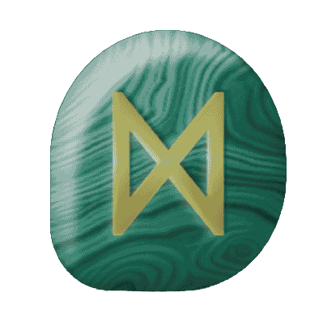

Runes are characters from ancient alphabets used by Germanic and Norse peoples in Northern Europe. The best-known runic alphabet is the Elder Futhark, which consists of 24 runes. Originally, runes were used for writing inscriptions on stone, wood, metal, and other materials.Beyond their use as a writing system, runes later became associated with symbolism, divination, and spiritual practices. Each rune has a name, a sound value, and a symbolic meaning. For example, Dagaz (ᛞ) is often associated with daylight, transformation, awakening, and new beginnings.Today, runes are studied for their historical, linguistic, and cultural significance, and some people use them for meditation, self-reflection, or divinatory practices.